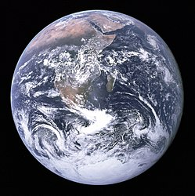

Земля́ — третя від Сонця планета Сонячної системи, єдина планета, на якій відоме життя, домівка людства. Земля належить до планет земної групи і є найбільшою з цих планет у Сонячній системі. Землю іноді називають світом, латинською назвою Терра або грецькою — Гея.
Земля обертається навколо Сонця еліптичною орбітою (дуже близькою до колової) із середньою швидкістю 29 785 м/с на середній відстані 149,6 млн км із періодом, що приблизно дорівнює 365,24 доби (зоряний рік). Земля має супутник — Місяць, який обертається навколо Землі на середній відстані 384 400 км. Нахил земної осі до площини екліптики становить 66°33′22″. Період обертання планети навколо своєї осі 23 год 56 хв 4,1 с. Обертання навколо своєї осі викликає зміну дня і ночі, а нахил осі до екліптики разом із обертанням навколо Сонця — зміну пір року.
| Значення | Величина | |
|---|---|---|
| Середній радіус | km | 6371,3 |
| Площа поверхні | km2 | 510 065 700 |
| Друга космічна швидкість | km/c | 11,186 |